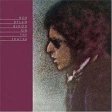

Blood on the Tracks

Released: January 20, 1975
Length: 51:42
Producer: Bob Dylan
Label: Columbia
Side 1
Tangled Up in Blue
Simple Twist of Fate
You're a Big Girl Now
Idiot Wind
You're Gonna Make Me Lonesome When You Go
Side 2
Meet Me in the Morning
Lily, Rosemary and the Jack of Hearts
If You See Her, Say Hello
Shelter from the Storm
Buckets of Rain
Home